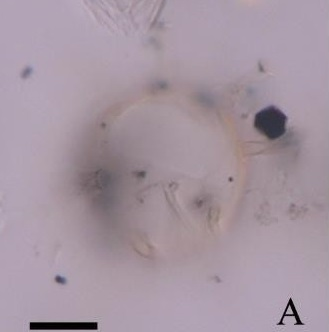
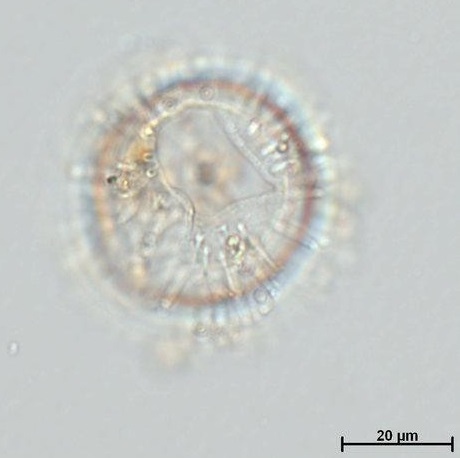

CYSTS LIST
- Achomosphaera andalousiensis
- Alexandrium catenella
- Alexandrium kutnerae
- Alexandrium margalefi
- Alexandrium minutum
- Alexandrium peruvianum
- Alexandrium pseudogoniaulax
- Alexandrium tamarense
- Alexandrium taylori
- Alexandrium spp.
- Archaeperidinium bailongense, cyst of
- Archaeperidinium constrictum, cyst of
- Archaeperidinium minutum, cyst of
- Archaeperidinium monospinum, cyst of
- Archaeperidinium saanichi, cyst of
- Archaeperidinium sp., cyst of
- Ataxiodinium choane
- Ataxiodinium confussum
- Ataxiodinium zevenboomii
- Ataxiodinium sp.
- Atlanticodinium striaticonulum
- Barrufeta resplendens, cyst of
- Biecheleria baltica, cyst of
- Biecheleria cincta, cyst of
- Biecheleria sp., cyst of
- Bitectatodinium spongium
- Bitectatodinium tepikiense
- Bitectatodinium sp.
- Boreadinium breve, cyst of
- Brigantedinium assymmetricum
- Brigantedinium auranteum
- Brigantedinium cariacoense
- Brigantedinium majusculum
- Brigantedinium simplex
- Brigantedinium sp.
- Capisocysta lata
- Caspidinium rugosum
- Cristadinium striatiserratum
- Cryodinium matsuokai
- Cryodinium meridianum
- Cryodinium sp.
- Dalella chathamensis
- Dapsilidinium pastielsii
- Desotodinium wrennii
- Diplopelta globula, cyst of
- Diplopelta symmetrica, cyst of
- Diplopsalias latipeltata
- Diplopsalias lenticula
- Diplopsalias ovata
- Dubridinium caperatum, cyst of
- Dubridinium cassiculum, cyst of
- Dubridinium cavatum, cyst of
- Dubridinium ulsterum, cyst of
- Dubridinium spp., cyst of
- Echinidinium aculeatum
- Echinidinium bispiniformum
- Echinidinium delicatum
- Echinidinium karaense
- Echinidinium granulatum
- Echinidinium sleipnerensis
- Echinidinium transparantum
- Echinidinium zonneveldiae
- Gonyaulax baltica, cyst of
- Gymnodinium catenatum, cyst of
- Gymnodinium inusitatum, cyst of
- Gymnodinium microreticulatum, cyst of
- Gymnodinium nolerii, cyst of
- Gymnodinium trapeziforme, cyst of
- Huia caspica, cyst of
- Impagidinium aculeatum
- Impagidinium caspienense
- Impagidinium japonicum
- Impagidinium pallidum
- Impagidinium paradoxum
- Impagidinium patulum
- Impagidinium plicatum
- Impagidinium sphaericum
- Impagidinium strialatum
- Impagidinium variaseptum
- Impagidinium velorum
- Islandinium brevispinosum
- Islandinium? cezare
- Islandinium minutum
- Lebouraia pusilla, cyst of
- Leipokatium invisitatum
- Lejeunecysta acuminate
- Lejeunecysta adeliensis
- Lejeunecysta attenuata
- Lejeunecysta beinenensis
- Lejeunecysta catomus
- Lejeunecysta communis
- Lejeunecysta cowiei
- Lejeunecysta epidoma
- Lejeunecysta fallax
- Lejeunecysta globosa
- Lejeunecysta granosa
- Lejeunecysta hyalina
- Lejeunecysta katatonos
- Lejeunecysta lata
- Lejeunecysta marieae
- Lejeunecysta oliva
- Lejeunecysta paratenella
- Lejeunecysta pulchra
- Lejeunecysta rotunda
- Lejeunecysta sabrina
- Lejeunecysta sp.
- Lingulodinium machaerophorum
- Margalefidinium polykrikoides, cyst of
- Melitasphaeridium angustum
- Melitasphaeridium choanophorum
- Nematosphaeropsis labyrinthus
- Nematosphaeropsis lemniscata
- Nematosphaeropsis rigida
- Nematosphaeropsis scala
- Nematosphaeropsis spp.
- Niea acanthocysta, cyst of
- Niea chinensis, cyst of
- Niea torta, cyst of
- Oblea acathocysta, cyst of
- Oblea rotunda, cyst of
- Operculodinium aguinawense
- Operculodinium centrocarpum
- Operculodinium israelianum
- Operculodinium janduchenei
- Operculodinium longispinigerum
- Operculodinium microtriainum
- Operculodinium piaseckii
- Operculodinium tegillatum
- Operculodinium sp.
- Pentapharsodinium dalei, cyst of
- Pentaplacodinium saltonense, cyst of
- Peridinium ponticum
- Polarella glacialis, cyst of
- Polykrikos hatmannii, cyst of
- Polykrikos kofoidii, cyst of
- Polykrikos quadratus, cyst of
- Polykrikos schwartzii, cyst of
- Polykrikos sp., cyst of
- Polysphaeridium zoharyi
- Protoperidinium americanum, cyst of
- Protoperidinium biconicum, cyst of
- Protoperidinium conicoides, cyst of
- Protoperidinium denticulatum, cyst of
- Protoperidinium excentricum, cyst of
- Protoperidinium fukuyoi, cyst of
- Protoperidinium fuzhouense, cyst of
- Protoperidinium humile, cyst of
- Protoperidinium lattissimum, cyst of
- Protoperidinium lewisiae, cyst of
- Protoperidinium monospinum, cyst of
- Protoperidinium nudum, cyst of
- Protoperidinium parthenopes, cyst of
- Protoperidinium punctulatum, cyst of
- Protoperidinium stellatum, cyst of
- Protoperidinium thorianum, cyst of
- Protoperidinium thulensense, cyst of
- Protoperidinium tricingulatum, cyst of
- Pyxidinopsis braboi
- Pyxidinopsis psilata
- Pyxidinopsis reticulata
- Pyxidinopsis reticulata (okhotsk)
- Pyxidinopsis sp.
- Qia_lebouriae
- Quinquecuspis concreta
- Scrippsiella acuminata
- Scrippsiella crystallina
- Scrippsiella erinaceus
- Scrippsiella spinifera
- Scrippsiella triffida
- Scrippsiella trochoidea
- Selenopemphix antarctica
- Selenopemphix armageddonensis
- Selenopemphix brevispinosum
- Selenopemphix brinkhuisii
- Selenopemphix conspicua
- Selenopemphix coronata
- Selenopemphix crenata
- Selenopemphix dionaeacysta
- Selenopemphix islandensis
- Selenopemphix nephroides
- Selenopemphix quanta
- Selenopemphix tholus
- Selenopemphix undulata
- Selenopemphix sp.
- Spiniferites alaskensis
- Spiniferites asperulus
- Spiniferites belerius
- Spiniferites bulloideus
- Spiniferites bentorii
- Spiniferites cruciformis
- Spiniferites delicatus
- Spiniferites elongatus
- Spiniferites frigidus
- Spiniferites hainanensis
- Spiniferites hyperacanthus
- Spiniferites lazus
- Spiniferites ludhamensis
- Spiniferites membranaceus
- Spiniferites mirabilis
- Spiniferites multisphaerus
- Spiniferites pachydermus
- Spiniferites pacificus
- Spiniferites ramosus
- Spiniferites spinatus
- Spiniferites splendidus
- Stelladinium abei
- Stelladinium bifurcatum
- Stelladinium denticulatum
- Stelladinium reidii
- Stelladinium robustum
- Stelladinium stellatum
- Stelladinium sp.
- Tectatodinium pellitum
- Trinovantedinium applanatum
- Trinovantedinium ferugnomatum
- Trinovantedinium glorianum
- Trinovantedinium harpagonium
- Trinovantedinium pallidifulvum
- Trinovantedinium variabile
- Trinovantedinium sp.
- Tuberculodinium vancampoae
- Votadinium bengalensis
- Votadinium calvum
- Votadinium concavum
- Votadinium elongatum
- Votadinium nanhaiense
- Votadinium pontifossatum
- Votadinium psilodora
- Votadinium reidii
- Votadinium rhomboideum
- Votadinium spinosum
- Xandarodinium xanthum
OPERCULODINIUM CENTROCARPUM
Color: *Transparent.
Surface: *Smooth. **Fibroreticulate. ***Thin < 1 um. Scattered granulares or columellae, often fine and faintly visible with interconnecting fibrils sometimes discernible.
Shape: *Spherical. **Spherical to subspherical.
Central body: *32.5 to 42.5 um. (diameter), 35 to 47 um. (diameter), **25.5 to 59.5 um. (diameter).
Process length: **8 to 16 um. (length), 4.5 to 10 um. (length), ***0.5 to 17.5 um. (length).
Process: *Hollow to fibrous. Smooth. Distal ends acuminate, capitate or slightly furcate. **Cylindrical, tips minutely hooked. ***Numerous, slender processes, varies from long to very short, but usually uniform on individual specimens. Smooth and circular in cross-section, distally open. Broaden slightly at their base and are expanded at the tips.
Archeopyle: *Archeopyle precingular by loss of one plate. **Archeopyle precingular 3P trapezoidal ***Formed by loss of third precingular plate 3", its margin has rounded angles.
Paratabulation: **Absent.
Septa: -
Sulcus: -
Distiguishing characteristics: -
DESCRIPTION:
Spherical central body bearing numerous, slender processes whose distribution does not clearly reflect tabulation. Process length varies from long to very short, but is usually uniform on individual specimens. The processes have a smooth surface and are circular in cross-section, hollow, and distally open. They may broaden slightly at their base, and are expanded at the tips. Central body wall is thin (less than 1.0 μm). The surface has scattered granules or columellae, often fine and faintly visible, with interconnecting fibrils sometimes discernible. Archeopyle is formed by loss of the third precingular plate (3′′) and its margin has rounded angles. (Extracted from Van Nieuwenhove et al., 2020).
LOWER STRATIGRAPHIC OCURRENCE:
Lower Pliocene (Kurita and Obuse, 2003; Verhoeven and Louwye, 2012; De Schepper et al., 2017). It may range below the Pliocene but its full stratigraphic range is obscured by the widening variation of morphotypes in the lower Neogene and Paleogene. (Extracted from Van Nieuwenhove et al., 2020).
IMAGES:
 1 1 |
2 | 3 |
| 4 | 5 | 6 |
| 7 | 8 | 9 |
| 10 | 11 | 12 |
 13 13 |
14 | 15 |
| 16 | 17 | 18 |
| 19 | 20 | 21 |
| 22 | 23 |  24 24 |
| 25 | 26 |  27 27 |
| 28 | 29 | 30 |
| 31 | 32 | 33 |
| 34 | 35 | 36 |
 37 37 |
38 | 39 |
| 40 | 41 | 42 |
| 43 | 44 | 45 |
IMAGES REFERENCE:
1. Operculodinium centrocarpum. Photomicrographs of the most important aquatic palynomorphs from Arroyo Baliza site. Scale bar: 10 um. LGCAB18: W36 (Candel et al., 2017- Figure 3-A).
2. Operculodinium centrocarpum. Photomicrographs of the most important aquatic palynomorphs from Arroyo Baliza site. Scale bar: 10 um. LGCAB10: Q42 (Candel et al., 2017- Figure 3-B).
3. Operculodinium centrocarpum. (Durandou et al., 2012 - Figure 5-D)
4. Operculodinium centrocarpum. Short spines. (Durandou et al., 2012 - Figure 5-G).
5. Operculodinium centrocarpum. var. Arctic (Durandou et al., 2012 - Figure 5-J).
6. Operculodinium centrocarpum. Bright-field photomicrographs of selected dinoflagellate cysts found in surface sediments from southern South Korea. Scale bar: 10 um. (Pospelova & Kim, 2010 - Plate 1-I).
7. Operculodinium centrocarpum. Dinoflagellate cysts from the Verrebroek Dock (VBD) and Deurganck Dock (DGD) sections. This specimen has an almost smooth wall surface. Central body max. diameter 32 um. Right lateral view of upper surface. (Louwye et al., 2004 - Figure 7-g).
8. Operculodinium centrocarpum. Dinoflagellate cysts from the Verrebroek Dock (VBD) and Deurganck Dock (DGD) sections. This specimen has an almost smooth wall surface. Central body max. diameter 32 um. Mid focus. (Louwye et al., 2004 - Figure 7-h).
9. Operculodinium centrocarpum. Bright-field photomicrographs of selected dinoflagellate cysts from the SBB. Scale bar: 10 um. Dorsal view, dorsal surface (Bringué et al., 2013 - Plate 1-3).
10. Operculodinium centrocarpum. (Daghor et al., 2016 - Plate 1-B).
11. Operculodinium centrocarpum. Bright-field photomicrographs. Two specimen with distinct capitate processes and fibrous outer wall, different focus. Scale bar: 10 um. (Van Hauwaert, 2016 - Plate I-11).
12. Operculodinium centrocarpum. Bright-field photomicrographs. Two specimen with distinct capitate processes and fibrous outer wall, different focus. Scale bar: 10 um. (Van Hauwaert, 2016 - Plate I-12).
13. Operculodinium centrocarpum. Bright-field photomicrographs. Two specimen with distinct capitate processes and fibrous outer wall, different focus. Scale bar: 10 um. (Van Hauwaert, 2016 - Plate I-13).
14. Operculodinium centrocarpum. Bright-field photomicrographs. Two specimen with distinct capitate processes and fibrous outer wall, different focus, archeopyle visible. Scale bar: 10 um. (Van Hauwaert, 2016 - Plate I-14).
15. Operculodinium centrocarpum. Bright-field photomicrographs of reworked specimens. Scale bar: 10 um. (Van Hauwaert, 2016 - Plate VI-9).
16. Operculodinium centrocarpum. Bright-field photomicrographs of reworked specimens. Scale bar: 10 um. (Van Hauwaert, 2016 - Plate VI-10).
17. Operculodinium centrocarpum. Bright-field photomicrographs. NBH325, Slide 1 M51/4, dorsal surface. (Pospelova et al., 2005 - Figure 3-4).
18. Operculodinium centrocarpum. Bright-field photomicrographs. NBH325, Slide 1, dorsal surface. (Pospelova et al., 2005 - Figure 3-5).
19. Operculodinium centrocarpum. Bright-field photomicrographs. var. truncatum. NBH 204, Slide 2, S58/3, orientation uncertain. Scale bar: 10 um. (Pospelova et al., 2005 - Figure 3-6).
20. Operculodinium centrocarpum. Bright-field photomicrographs of selected dinoflagellate cysts found in surface sediments from southern South Korea. Scale bar: 10 m. (Pospelova & Kim, 2010 - Plate 1-I).
21. Operculodinium centrocarpum. Bright-field photomicrographs, UVic 09-649, slide 2, J51/2; orientation uncertain. Scale bar: 20 um. (Price & Pospelova, 2010 - Plate I-3).
22. Operculodinium centrocarpum. Bright-field photomicrographs, Uvic 09-088, slide 1, W33/2; orientation uncertain. Scale bar: 20 um. (Price & Pospelova, 2010 - Plate I-4).
23. Operculodinium centrocarpum. Sample LA036, V14/4, (lateral right view, upper focus in phase contrast). (Correa, 2015 - Plate 1-4).
24. Operculodinium centrocarpum. Dinoflagellate cysts identified in Barranca Final Fm. and Madryn Harbor Fm., dorsal view upper focus. Scale bar: 10 um. (Fuentes, 2016 - Figure 6-C).
25. Operculodinium centrocarpum. Light microscope photographs of selected dinocysts from core 22-GC3. Scale bar: 20 um. (783 cm. high foci) (Shumilovskikh, 2013 - Plate 1-7).
26. Operculodinium centrocarpum. Photomicrographs of selected autotrophic dinocyst species. Scale bar: 20 um. Sample WP4 (Verhoeven et al., 2011 - Plate 2-S).
27. Operculodinium centrocarpum. Photomicrographs of selected autotrophic dinocyst species. Scale bar: 20 um. Sample WP4 (Verhoeven et al., 2011 - Plate 2-T).
28. Operculodinium centrocarpum. Morphological features of some dinoflagellate cysts. Scale bar: 10 um. (Yoon et al., 2014 - Plate II-6).
29. Operculodinium centrocarpum. All photographs taken using differential interference contrast. Scale bar. 20 m. Sample U1406 A9 H3-60-62 cm., slide 16F187 B; M32/2 Specimen in high and low focus (Egger et al., 2018 - Plate II-9).
30. Operculodinium centrocarpum. All photographs taken using differential interference contrast. Scale bar. 20 m. Sample U1406 A9 H3-60-62 cm., slide 16F187 B; M32/2 Specimen in high and low focus (Egger et al., 2018 - Plate II-10).
31. Operculodinium centrocarpum. Autotrophic dinoflagellate cysts identified in three cores of studied sediment (CTB, KP60BIS and PD24). Scale bar: 10 um. (Franco 2018 - Slide 1-A).
32. Operculodinium centrocarpum. Autotrophic dinoflagellate cysts identified in three cores of studied sediment (CTB, KP60BIS and PD24). Shows precingular archeopyle .Scale bar: 10 um. (Franco 2018 - Slide 1-B).
33. Operculodinium centrocarpum. Autotrophic dinoflagellate cysts identified in three cores of studied sediment (CTB, KP60BIS and PD24). Scale bar: 10 um. (Franco 2018 - Slide 1-C).
34. Operculodinium centrocarpum. Autotrophic dinoflagellate cysts identified in three cores of studied sediment (CTB, KP60BIS and PD24). Scale bar: 10 um. (Franco 2018 - Slide 1-D).
35. Operculodinium centrocarpum. Autotrophic dinoflagellate cysts identified in three cores of studied sediment (CTB, KP60BIS and PD24). Scale bar: 10 um. Short processes. (Franco 2018 - Slide 1-E).
36. Operculodinium centrocarpum. Autotrophic dinoflagellate cysts identified in three cores of studied sediment (CTB, KP60BIS and PD24). Scale bar: 10 um. Mid focus. (Franco 2018 - Slide 1-F).
37. Operculodinium centrocarpum. Autotrophic dinoflagellate cysts identified in three cores of studied sediment (CTB, KP60BIS and PD24). Scale bar: 10 um. Mid focus. (Franco 2018 - Slide 1-G).
38. Operculodinium centrocarpum. Autotrophic dinoflagellate cysts identified in three cores of studied sediment (CTB, KP60BIS and PD24). Scale bar: 10 um. High focus. (Franco 2018 - Slide 1-H).
39. Operculodinium centrocarpum. Photoplate of main dinocyst taxa and palynomorphs (Caron et al., 2019 - Figure 2-a).
40. Operculodinium centrocarpum. Bright-field photomicrographs of selected autotrophic dinoflagellate cysts. Scale bar: 10 um. (Over, 2019 - Plate II-B).
41. Operculodinium centrocarpum. MARUM. Dorsal view single grain reference.
42. Operculodinium centrocarpum. MARUM. Cross section.
43. Operculodinium centrocarpum. Dimensions of central body: 30 um. Process length: 5 um. Sample ID: MD93 (Dube et al., 2019 - Plate 3-1).
44. Operculodinium centrocarpum. Dimensions of central body: 30 um. Process length: 5 um. Sample ID: MD93 (Dube et al., 2019 - Plate 3-2).
45. Operculodinium centrocarpum. Dimensions of central body: 30 um. Process length: 5 um. Sample ID: MD93 (Dube et al., 2019 - Plate 3-3).
BIBLIOGRAPHY:
- Bringué, M., Pospelova, V., & Pak, D. (2013). Seasonal production of organic-walled dinoflagellate cysts in an upwelling system: a sediment trap study from the Santa Barbara Basin, California. Marine Micropaleontology, 100, 34-51.
- Candel, M. S., Louwye, S., & Borromei, A. M. (2017). Reconstruction of the late Holocene paleoenvironment of the western Beagle Channel (Argentina) based on a palynological analysis. Quaternary international, 442, 2-12.
- Caron, M., Rochon, A., Montero‐Serrano, J. C., & St‐Onge, G. (2019). Evolution of sea‐surface conditions on the northwestern Greenland margin during the Holocene. Journal of Quaternary Science, 34(7), 569-580.
- Daghor, L., Hssaïda, T., Chakir, S., Slimani, H., Mouflih, M., Hamoumi, N., ... & EL BOUHMADI, K. (2016). Etude des kystes de dinoflagellés des sédiments de surface du système lagunaire atlantique marocain Oualidia-Sidi Moussa et de la lagune méditerranéenne de Nador. Bull. l’Institut Sci. Rabat, Sect. Sci. la Terre, 38, 1-18.
- Dube, M. M. (2019). Central North Atlantic paleoceanography during the Late Early Pleistocene (spanning Marine Isotope Stage 21) based on a high-resolution dinoflagellate cyst record.
- Durantou, L., Rochon, A., Ledu, D., Massé, G., Schmidt, S., & Babin, M. (2012). Quantitative reconstruction of sea-surface conditions over the last 150 yr in the Beaufort Sea based on dinoflagellate cyst assemblages: the role of large-scale atmospheric circulation patterns. Biogeosciences, 9(12), 5391-5406.
- Egger, L. M., Bahr, A., Friedrich, O., Wilson, P. A., Norris, R. D., Van Peer, T. E., ... & Pross, J. (2018). Sea-level and surface-water change in the western North Atlantic across the Oligocene–Miocene Transition: a palynological perspective from IODP Site U1406 (Newfoundland margin). Marine Micropaleontology, 139, 57-71.
- Franco Arias, D. A. (2018). Reconstrucción de cambios paleoambientales en el estuario de Bahía Blanca y áreas adyacentes de la plataforma durante el Holoceno a través de registros palinológicos, sedimentológicos y geocronológicos.
- FUENTES, S. N., GULER, M. V., CUITIÑO, J. I., Palazzesi, L., SCASSO, R. A., & BARREDA, V. D. (2017). Bioestratigrafía basada en quistes de dinoflagelados del Neógeno en el Noreste de la Patagonia, Argentina. Revista Brasileira de Paleontologia, 19(2), 303-314.
- Louwye, S., Head, M. J., & de Schepper, S. (2004). Dinoflagellate cyst stratigraphy and palaeoecology of the Pliocene in northern Belgium, southern North Sea Basin. Geological Magazine, 141(3), 353-378.
- Marret, F., & Kim, S. Y. (2009). Operculodinium aguinawense sp. nov., a dinoflagellate cyst from the Late Pleistocene and recent sediments of the east equatorial Atlantic Ocean. Palynology, 33(1), 125-139. (**)
- Pospelova, V., Chmura, G. L., Boothman, W. S., & Latimer, J. S. (2005). Spatial distribution of modern dinoflagellate cysts in polluted estuarine sediments from Buzzards Bay (Massachusetts, USA) embayments. Marine Ecology Progress Series, 292, 23-40.
- Pospelova, V., & Kim, S. J. (2010). Dinoflagellate cysts in recent estuarine sediments from aquaculture sites of southern South Korea. Marine Micropaleontology, 76(1-2), 37-51.
- Price, A. M., & Pospelova, V. (2011). High-resolution sediment trap study of organic-walled dinoflagellate cyst production and biogenic silica flux in Saanich Inlet (BC, Canada). Marine Micropaleontology, 80(1-2), 18-43.
- Shumilovskikh, L. (2013). Vegetation, climate and environmental dynamics of the Black Sea/Northern Anatolian region during the last 134 ka obtained from palynological analysis (Doctoral dissertation, Niedersächsische Staats-und Universitätsbibliothek Göttingen).
- Van Hauwaert, T. (2016). Recent dinoflagellate cysts from the Chesapeake Estuary (Maryland and Virginia, USA): taxonomy and ecological preferences (Doctoral dissertation, M. Sc. Thesis, Ghent University, Ghent, Belgium).
- Van Nieuwenhove, N., Head, M. J., Limoges, A., Pospelova, V., Mertens, K. N., Matthiessen, J., ... & Rochon, A. (2020). An overview and brief description of common marine organic-walled dinoflagellate cyst taxa occurring in surface sediments of the Northern Hemisphere. Marine Micropaleontology, 159, 101814. (***)
- Verhoeven, K., & Louwye, S. (2013). Palaeoenvironmental reconstruction and biostratigraphy with marine palynomorphs of the Plio–Pleistocene in Tjörnes, Northern Iceland. Palaeogeography, Palaeoclimatology, Palaeoecology, 376, 224-243.
- Yoon, Y. H., & Shin, H. H. (2013). Summary on the Dinoflagellate Cyst Assemblages of Modern Sediments from Korean Coastal Waters and Adjoining Sea. Korean Journal of Environmental Biology, 31(4), 243-274.
- Zonneveld, K. A., & Pospelova, V. (2015). A determination key for modern dinoflagellate cysts. Palynology, 39(3), 387-409. (*)